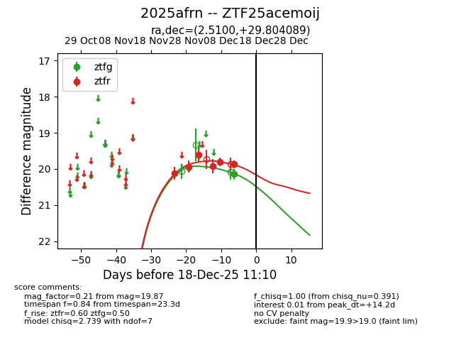
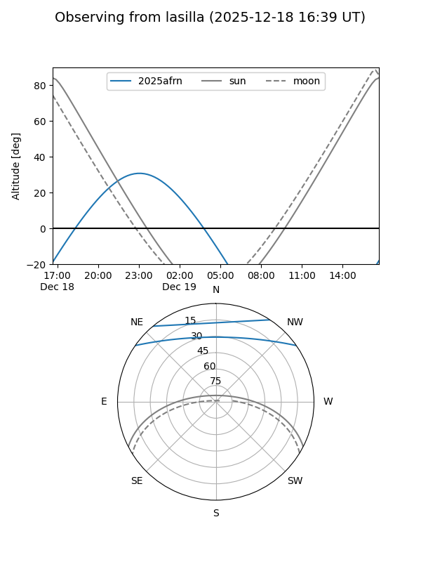
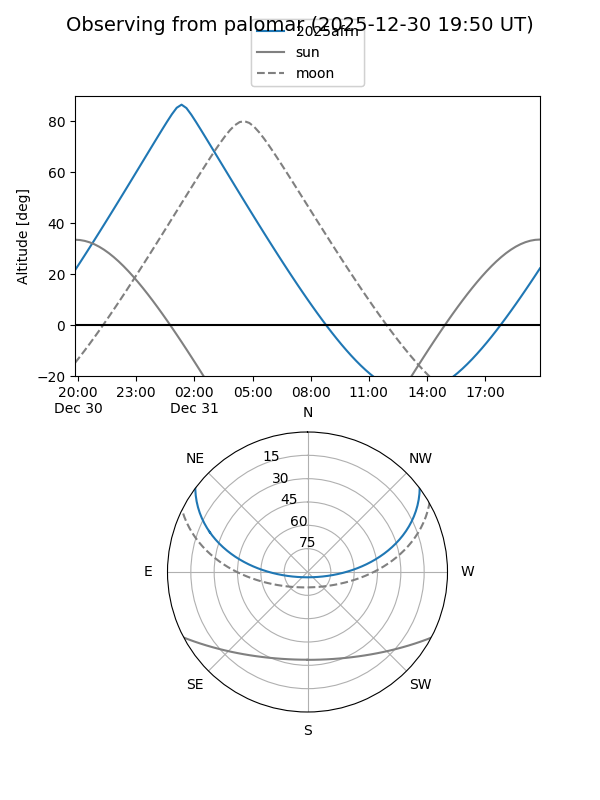
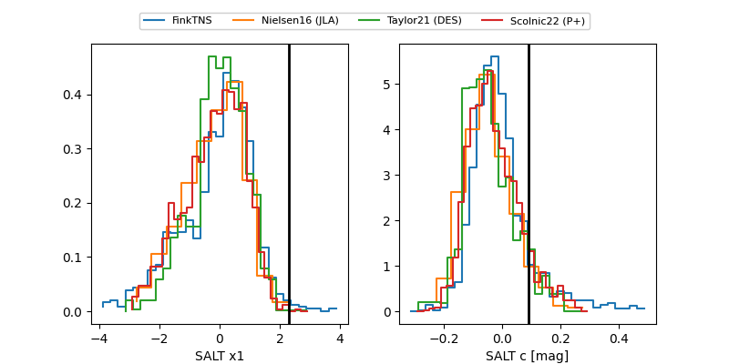

2025afrn
Target 2025afrn at 2025-12-18 11:17
Aliases and brokers:
FINK: fink-portal.org/ZTF25acemoij
Lasair: lasair-ztf.lsst.ac.uk/objects/ZTF25acemoij
ALeRCE: alerce.online/object/ZTF25acemoij
TNS: wis-tns.org/object/2025afrn
YSE: ziggy.ucolick.org/yse/transient_detail/2025afrn
alt names
ZTF25acemoij (ztf,fink_ztf)
2025afrn (tns,yse)
Coordinates:
equatorial (ra, dec) = 2.5100,+29.80409
equatorial (HMS+DMS) = 00:10:02.41,+29:48:14.72
galactic (l, b) = (112.3146,-32.21274)
Photometry
last ztfg=20.15, ztfr=19.87
1 ztfg, 6 ztfr detections
Lightcurve

Visibility


Additional plots
